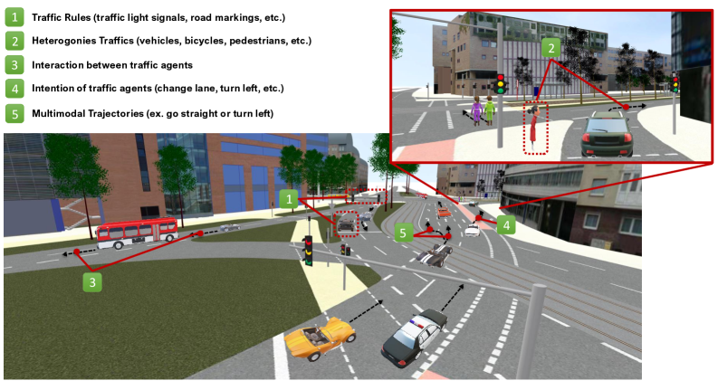

この論文は、自動運転アプリケーションにおける 車両軌跡予測（Vehicle Trajectory Prediction） の最先端手法を包括的にレビューする論文である。研究課題、手法の分類、性能比較、今後の方向性をまとめており、Springer発行の Automotive Innovation 誌に掲載されている。
自動運転システムが安全かつ効率的に動作するためには、周囲の車両や歩行者の将来の軌跡を正確に予測することが不可欠である。軌跡予測は自動運転スタックの中核的な機能であり、知覚から計画へのブリッジを担う。本論文は、この領域の最先端研究を体系的に整理している。
車両軌跡予測は以下の理由から自動運転において重要である。
本論文は軌跡予測手法を複数の軸で分類している。主な分類軸には手法の種類（物理モデル・機械学習・深層学習）、入力データの種類（過去軌跡・地図・センサーデータ）、予測対象（車両・歩行者・自転車など）が含まれる。
カルマンフィルタや定速・定加速運動モデルなど、物理法則や運動学的モデルに基づく手法。解釈しやすく計算コストが低いが、複雑なインタラクションや意図の変化を捉えることが難しい。
LSTM、Transformer、GNN（グラフニューラルネットワーク）、拡散モデルなど多様なアーキテクチャが活用されている。データから複雑なパターンを学習できるが、大量のデータが必要で解釈可能性が低い場合がある。
複数の交通参加者間の社会的インタラクションを明示的にモデル化する手法。ゲーム理論的アプローチやアテンション機構を使ったモデルが含まれる。
軌跡予測の評価に広く使われているデータセットとして、nuScenes、Argoverse、Waymo Open Dataset、ETH/UCY（歩行者）などが代表的なベンチマークとして機能している。評価指標としては最終変位誤差（FDE）、平均変位誤差（ADE）、ミス率などが用いられている。
軌跡予測において現在進行中の研究課題として以下が挙げられる。
本論文は以下のような研究方向が今後重要になると指摘している。
車両軌跡予測は自動運転の安全性を左右する核心的な技術であり、研究の進展が速い分野でもある。本論文は、この分野の全体像を把握するうえで体系的な参照資料として機能する。Springer発行の査読付き論文として、引用・参照の出発点としても使いやすい。
自動運転の予測モジュールを研究・開発するエンジニアや研究者にとって、最先端手法の全体像を把握するための参考資料として適している。特に、手法の比較や自分の研究のポジショニングを考える際に役立つ。